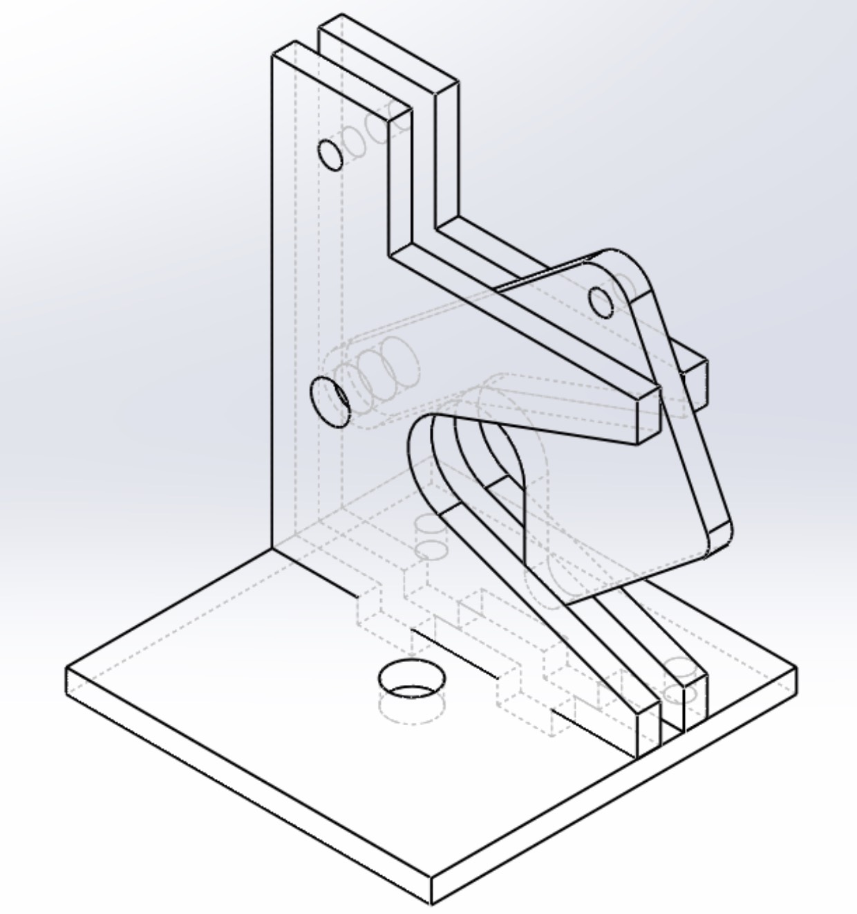
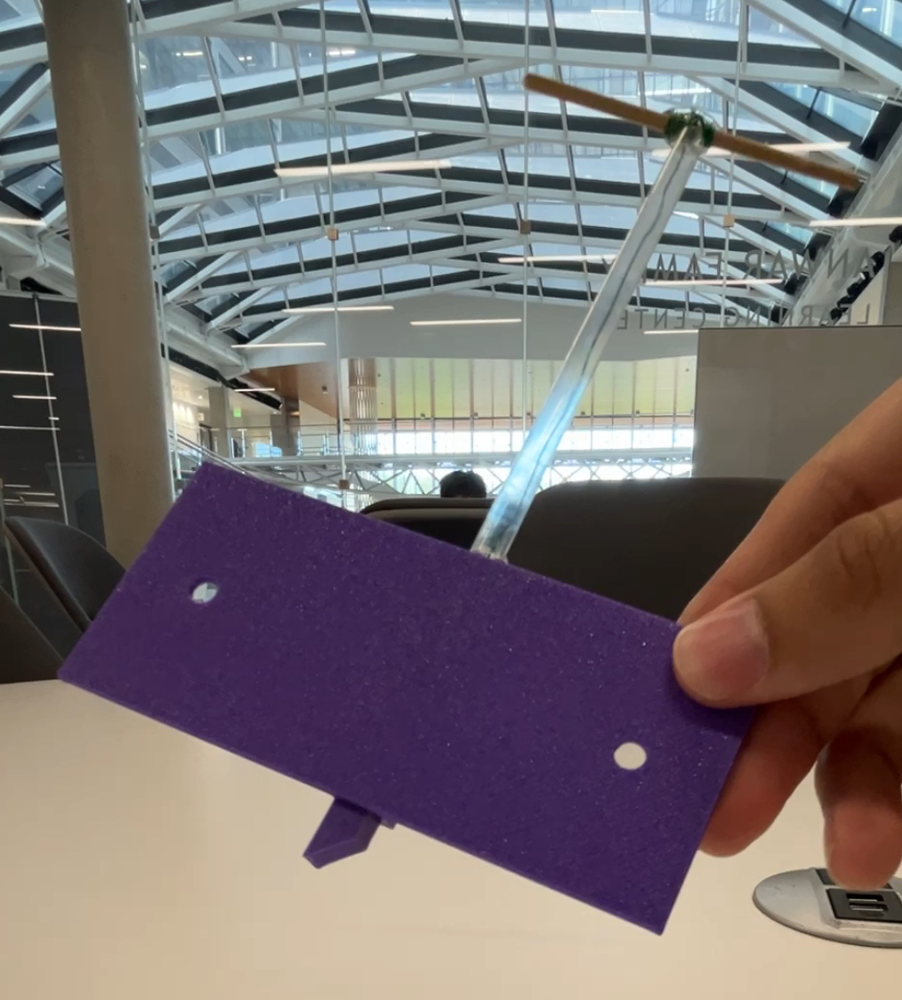
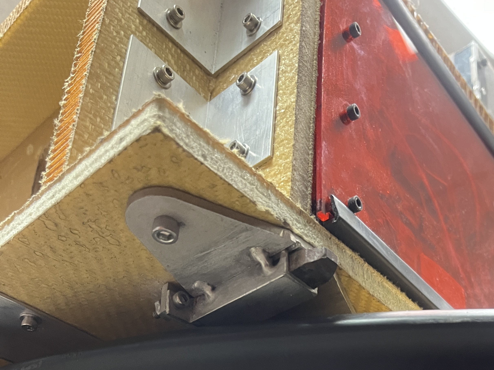

Overview
Designed and implemented a mechanical locking mechanism to secure an 80 kg battery box for a solar race car. The system was required to withstand dynamic loading while remaining compact, manufacturable, and easy to operate.
Design Requirements
- Withstand 5g impulse loading from battery mass
- Interface with Kevlar-foam composite sandwich structure
- Fit within 3" × 3" footprint (top-mounted option)
- Maintain ≥1" ground clearance (bottom-mounted option)
- Simple, reliable latching/unlatching mechanism
- Manufacturable with available tools and off-the-shelf components
Design Iteration
Initial Concept
The first design attempted to satisfy all constraints through a multi-component mechanism. However, design review revealed excessive complexity, poor manufacturability, and unnecessary part count. The concept was scrapped in favor of a simpler approach.

Redesign Strategy
The second iteration focused on simplification and robustness:
- Reduced part count and eliminated unnecessary features
- Incorporated off-the-shelf components (U-brackets, steel stock)
- Designed for straightforward machining and assembly
- Prioritized reliability under dynamic loading
Prototyping
A proof-of-concept prototype was built using 3D printing to validate the mechanism’s functionality and ease of operation before committing to final fabrication.

Final Implementation
Following design review, minor optimizations were made to reduce material usage and improve mounting geometry. The final design was manufactured and integrated into the vehicle.

Key Engineering Insights
- Simpler designs are often more robust and manufacturable
- Design reviews are critical for identifying overengineering early
- Prototyping accelerates iteration and reduces risk before fabrication
- Designing for real constraints (space, load, materials) drives better solutions
Impact
The final mechanism met all design constraints and was successfully implemented on the vehicle, contributing to a secure and serviceable battery system for competition.